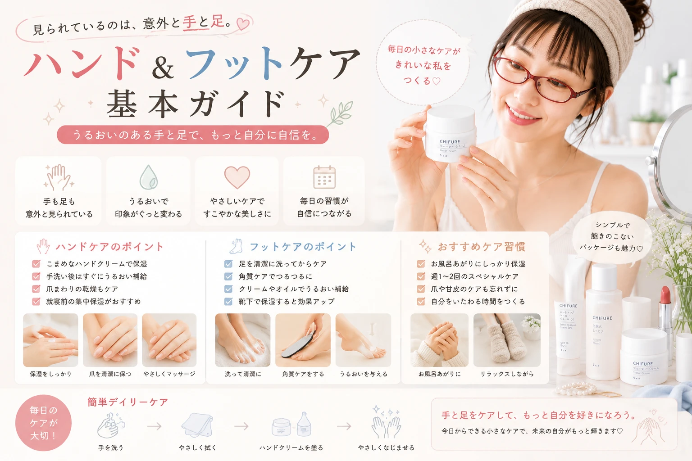

手・足のケア完全ガイド
乾燥・手荒れ・かかとケアを徹底解説
手や足は毎日使う部位だからこそ、乾燥や摩擦によるダメージを受けやすい場所です。 この記事では、ハンドクリームの選び方、手荒れ対策、ネイルケア、かかとの角質ケア、毎日続けられるフットケアまで初心者にも分かりやすく解説します。
この記事でわかること
- ✔ 手・足が乾燥する原因
- ✔ 正しいハンドケア
- ✔ ネイル周りのお手入れ
- ✔ かかとの角質ケア
- ✔ フットケアの基本
- ✔ 毎日続けるポイント
手・足のケアとは？
手や足は毎日使うため、乾燥や摩擦、紫外線、洗剤などの影響を受けやすい部位です。 顔のスキンケアと同じように、毎日のお手入れを続けることで乾燥や手荒れ、かかとのガサガサを予防しやすくなります。
特に手は年齢が出やすい部位とも言われています。毎日の保湿を習慣にしましょう。
手・足をケアするメリット
- ✔ 手荒れ・乾燥を防ぎやすい
- ✔ 爪や指先がきれいに見える
- ✔ かかとのガサガサを予防できる
- ✔ 清潔感がアップする
- ✔ 肌をなめらかな状態に保ちやすい
ハンドケアの基本

手は水仕事やアルコール消毒などで乾燥しやすい部位です。 毎日の保湿を続けることが、美しい手肌への近道になります。
基本のケア手順
- 手をやさしく洗う
- 清潔なタオルで水分を拭く
- ハンドクリームを適量塗る
- 手のひら・甲・指先までなじませる
おすすめのタイミング
- 手洗い後
- アルコール消毒後
- 就寝前
- 外出前
ハンドクリームの選び方
肌質や使用シーンに合わせてハンドクリームを選ぶことで、より快適にケアを続けられます。
| タイプ | 特徴 | おすすめ |
|---|---|---|
| さっぱりタイプ | ベタつきが少ない | 日中・仕事中 |
| しっとりタイプ | 保湿力が高い | 乾燥肌 |
| 高保湿タイプ | 油分が多く保護力が高い | 就寝前 |
初心者へのおすすめ
昼はベタつきにくいタイプ、夜は高保湿タイプと使い分けると快適です。
ネイル・指先のケア
指先や甘皮は乾燥しやすく、小さなささくれができやすい部分です。 ネイルオイルやハンドクリームを使って保湿することで、健康的な指先を保ちやすくなります。
ネイルケアのポイント
- ✔ 爪を切りすぎない
- ✔ 甘皮を無理に切らない
- ✔ ネイルオイルで保湿する
- ✔ 爪やすりで形を整える
フットケアの基本

足は毎日の歩行や靴との摩擦によって負担がかかりやすい部位です。 汗をかきやすく蒸れやすいため、清潔に保ち、保湿を続けることが大切です。
毎日のフットケア
- 足をやさしく洗う
- 指の間までしっかり乾かす
- ボディクリームやフットクリームで保湿する
- 清潔な靴下を履く
ポイント
- ✔ 毎日保湿する
- ✔ 足の指の間まで洗う
- ✔ 通気性の良い靴を選ぶ
- ✔ 靴を毎日履き替える
かかとの角質ケア
かかとは体重がかかるため角質が厚くなりやすい部位です。 削りすぎると逆に角質が厚くなることもあるため、やさしいケアを心がけましょう。
| ケア方法 | 頻度の目安 |
|---|---|
| 保湿クリーム | 毎日 |
| 軽い角質ケア | 週1回程度 |
| フットパック | 週1〜2回 |
注意
軽石ややすりで強く削りすぎると、肌を傷つけたり角質が厚くなる原因になることがあります。 やさしく少しずつケアしましょう。
足のニオイ対策
足のニオイは汗そのものではなく、汗や皮脂をエサにした雑菌が増えることで発生します。 毎日のケアを続けることで予防しやすくなります。
ニオイ予防のポイント
- ✔ 毎日足を洗う
- ✔ 指の間までしっかり乾かす
- ✔ 清潔な靴下を履く
- ✔ 靴をローテーションして乾燥させる
- ✔ 消臭スプレーや除菌スプレーを活用する
毎日続けるケアルーティン
短時間でも毎日続けることが、美しい手足を保つポイントです。
| タイミング | おすすめケア |
|---|---|
| 朝 | ハンドクリーム・UV対策 |
| 昼 | 手洗い後にハンドクリーム |
| 夜 | ハンドクリーム・フットクリームで保湿 |
| 週1回 | 角質ケア・ネイルケア |
ワンポイントアドバイス
寝る前にハンドクリームやフットクリームを塗り、綿素材の手袋や靴下を着用すると、保湿成分が肌になじみやすくなります。
やってはいけないハンド・フットケア
間違ったお手入れは、乾燥や手荒れ、ひび割れ、かかとのガサガサを悪化させる原因になることがあります。 毎日のケアは「やさしく・続けること」が大切です。
NGポイント
- 熱すぎるお湯で手洗い・足浴をする
- 保湿せずに放置する
- かかとを強く削りすぎる
- 甘皮を無理に切る
- 濡れたまま靴や靴下を履く
- 同じ靴を毎日履き続ける
- 乾燥したままネイルを繰り返す
毎日の少しのケアでも、続けることで手足のコンディションは変わっていきます。
よくある質問
Q. ハンドクリームは1日に何回塗ればいいですか？
手洗い後やアルコール消毒後、乾燥を感じたタイミングで塗るのがおすすめです。 特に就寝前の保湿は効果的です。
Q. かかとの角質ケアは毎日必要ですか？
角質ケアは週1回程度を目安に行い、普段は毎日保湿を続けることで、かかとをなめらかに保ちやすくなります。
Q. ネイルオイルは必要ですか？
乾燥しやすい指先や甘皮の保湿に役立ちます。 ハンドクリームとあわせて使うことで、指先の乾燥対策がしやすくなります。
Q. 足のニオイを防ぐにはどうしたらいいですか？
足を清潔に保ち、指の間までしっかり乾かすことが基本です。 靴をローテーションして乾燥させることもニオイ対策につながります。
まとめ
手や足は毎日酷使される部位だからこそ、こまめな保湿と清潔な状態を保つことが大切です。 毎日のケアを習慣化することで、乾燥や手荒れ、かかとのガサガサを予防しやすくなります。
今日から始める3つのポイント
- ✔ 手洗い後はハンドクリームで保湿する
- ✔ お風呂上がりにフットクリームを塗る
- ✔ 週1回の角質ケアを取り入れる
毎日の積み重ねが、美しく健康的な手足づくりにつながります。 無理のない範囲で、自分に合ったケアを続けていきましょう。
おすすめのハンド・フットケアアイテム
毎日の保湿や角質ケアを続けるために、使いやすいアイテムを選びましょう。